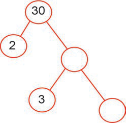
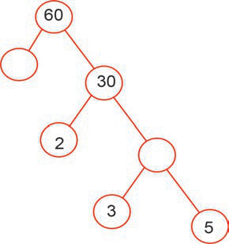
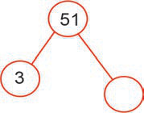

Zoezi la tano
1.Tafuta vigawo tasa vya namba zifuatazo:
(a) 12
(b) 28
(c) 15
(d) 24
(e) 14
(f) 154
2.
Je, namba 9 ina vigawo tasa vingapi?
3.
Tafuta vigawo tasa vyote vya 100.
4.
Andika 45 kama zao la vigawo tasa.
5.Jaza vigawo vinavyokosekana katika ngoe zifuatazo:
(a)

(b)

(c)
